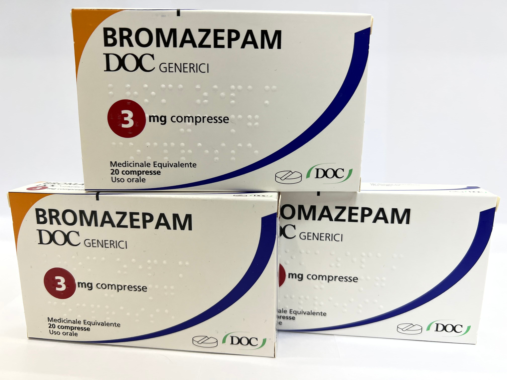

Контактна інформація:
Ціна: 480 грн/уп.
В наявності
Виробник: Італія
Ціна: 480 грн/уп.
В наявності
Саме в FarmItal ви можете купити таблетки Bromazepam, Бромазепам в Україні, Гарантовано Якісний!
Доставка Bromazepam здійснюється транспортними компаніями, терміни виконання замовлення обумовлюються менеджером Фармітал. Ви можете замовити Бромазепам у містах: Одеса, Херсон, Чернігів, Сєверодонецьк, Бердянськ, Бровари, Дніпро, Вінниця, Київ, Слов'янськ, Полтава, Краматорськ, Біла Церква, Кам'янське, Маріуполь, Чернівці, Олександрія, Кам'янець-Подільський, Львів, Запоріжжя, Кропивницький, Житомир, Івано-Франківськ, Суми, Черкаси, Костянтинівка, Мелітополь, Кривий Ріг, Рівне, Луцьк, Нікополь, Павлоград, Ужгород, Кременчук, Лисичанськ, Хмельницький, Тернопіль, Харків, Миколаїв, а також в інших населених пунктах України.
Таблетки по 3 мг № 20 - 480грн/уп.
1 таблетка містить бромазепаму 3мг;
допоміжні речовини: лактоза, целюлоза мікрокристалічна, натрію докузат, натрію бензоат, кремнію діоксид колоїдний, крохмаль кукурудзяний, магніюстеарат;
Фармакодинаміка. Препарат має всі властивості бензодіазепінів: відзначається анксіолітична, гіпноседативна, міорелаксуюча та проти судомна дія. Разом з тим всі представники групи бензодіазепінів відрізняються між собою запитомою вагою перелічених компонентів у спектрі психотропного ефекту. Загальноприйнятою є точка зору, згідно з якою фармакологічна діябензодіазепінів є результатом посилення нейронального гальмування в рецепторах, медіатором у яких служить гамма-аміномасляна кислота (ГАМК).
Бромазепам протипоказаний хворим з підвищеною чутливістю до бензодіазепінів.
Зберігати у недоступному для дітей місці при кімнатній температурі 15 - 25°С.